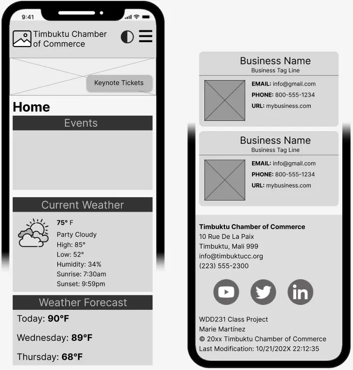
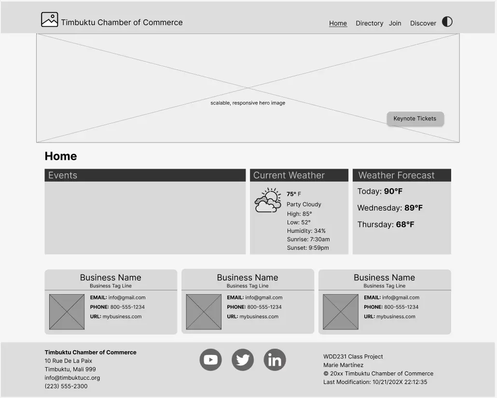

Site Name
Ghanaian Culture
This name reflects the heart of the project—celebrating Ghana’s rich traditions, festivals, and modern influence. It’s direct, memorable, and culturally rooted.
Optional domain availability: ghanaian-culture.org
Site Purpose
The site will showcase Ghana’s cultural heritage and contemporary impact through:
- Introductory content on ethnic groups, languages, and symbols
- Festival highlights and traditional crafts
- Modern cultural exports like music, fashion, and cuisine
Scenarios
- What are the major festivals in Ghana and how can I attend respectfully?
- How has Ghanaian music and fashion influenced global trends?
- Where can I learn about Adinkra symbols and their meanings?
Color Schema
- Deep Red (#8b0000)
- Warm Ivory (#fff8f0)
- Sandy Orange (#f4a460)
Typography
- Merriweather – Used for headings and titles (serif, elegant)
- Open Sans – Used for body text and paragraphs (clean and readable)
These fonts balance tradition and modern clarity, reflecting the site’s theme.
Wireframe
Mobile View

Desktop View

CSS
Styling will be split into:
site-plan.css – For this documentmain.css – For the live site
Both will use the selected color schema and typography consistently across pages.